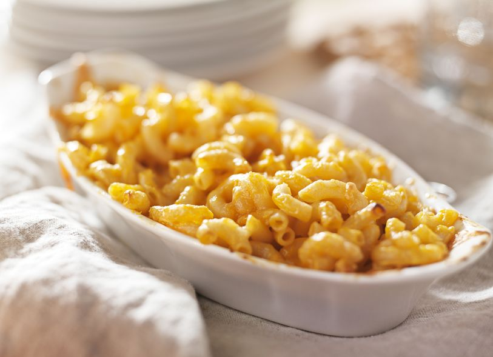

Grandma's Macaroni and Cheese

Directions
Since the dawn of humanity macaroni and cheese has enticed the toddler, teenager, and old-timer alike. Few foods can compare to mac and cheese's cross-generational appeal, and thus it makes a perfect quick and easy meal that it sure to appease all ages. Despite its prevalence, few can claim to have mastered the perfect Mac and Cheese recipe. Light, creamy, fresh. These are all words describe the perfect mac and cheese. Here today I have a recipe that also is described by these three words. And while it may not be the "perfect" mac and cheese recipe, my grandma's top secret mac and cheese recipe certainly comes close.
Ingredients
1 cup macaroni
2 cups cheese
1 cup butter
2 cloves garlic
a pinch salt
1 tablespoon cream cheese
2 tablespoons flour
Steps
- Combine the macaroni, 4 cups water and 1 tablespoon salt in a 6- or 8-quart Instant Pot® multi-cooker (see Cook's Note). Follow the manufacturer's guide for locking the lid and preparing to cook. Set to pressure cook on high for 4 minutes.
- After the pressure cook cycle is complete follow the manufacturer's guide for quick release and wait until the cycle is complete. Being careful of any remaining steam, unlock and remove the lid and switch to the low saute setting.
- Stir in the evaporated milk, butter and 1/4 cup water. Then add the Cheddar, a little at time, while constantly stirring, until the cheese is completely melted. Serve hot.